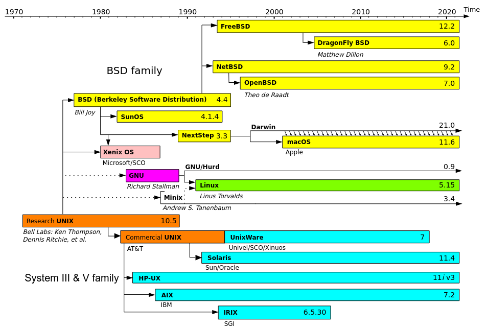

TP Système d'exploitation 1
Travaux Pratiques
Programme:
- TP 01 - Introduction & Installation -
- TP 02 - Le shell -
- TP 03 - C sous Linux -
- TP 04 - Processus sous Linux -
- TP 05 - Le SGF -
Introduction
Définition

fonctionnalités
- Accès aux fichiers
- Accès aux ressources
- Contrôle
- Utilisation
- Interface de programmation
- Interface graphique
- Processeur
- La communication inter-processus
- Mémoire
- La mémoire virtuelle
- Périphériques
- Contrôleur
- Réseau
- Contrôle d'accès
- ...........
exemple
| les systèmes d'exploitation les plus répandus sont: |
|---|
| Windows (pour les PC) |
| Mac OS (pour les ordinateurs d'Apple) |
| Linux (pour les PC et les serveurs) |
| Unix (pour les serveurs) |
Histoire Unix
multics
(MULTiplexed Information and Computing Service)Unics
(UNiplexed Information and Computing Service)
Unix

Un mini-ordinateur PDP-7
Unix
- C’est un vrai système multitâche et multi-utilisateur, robuste et transparent.
- Il définit clairement les droits d’accès aux fichiers.
- Il sépare les processus bien proprement.
- Il est conçu dès le départ pour fonctionner en réseau.
Unix time line
GNU/Linux: Introduction

Distribution Linux
Classement
| Classement Similarweb (mai 2023) | |
|---|---|
| Distribution | Visites totales |
| RedHat | 6,7 millions |
| Ubuntu | 6,4 millions |
| Archlinux | 3 millions |
| Kali linux | 3 millions |
| Linux Mint | 2,4 millions |
| Debian | 2 millions |
| Fedora Linux | 1,3 million |
| Manjaro | 1,1 million |
Composition
Composition d'une distribution GNU/Linux
- Un noyau Linux;
- Un ensemble de logiciels de base issus du projet GNU;
- D’autres programmes libres (navigateur Web, lecteur mail, serveur FTP, . . . )
- Éventuellement quelques logiciels propriétaires;
- Une méthode pour installer et désinstaller facilement ces programmes;
- Un programme d’installation du système.
Installation
préparation
- Choisir une distribution selon besoin et selon la capacité du matériel
- Préparer la partition en cas d'installation en dual boot
- Préparer les utilitaires: (Ventoy & rufus ....)
- Créer la clé USB bootable
- Démarrer une session live
- Essayer (découvrir) le système
- Démarrer l’installation interactive( choix de la partitions de disque, langue , nom d'utilisateur......)